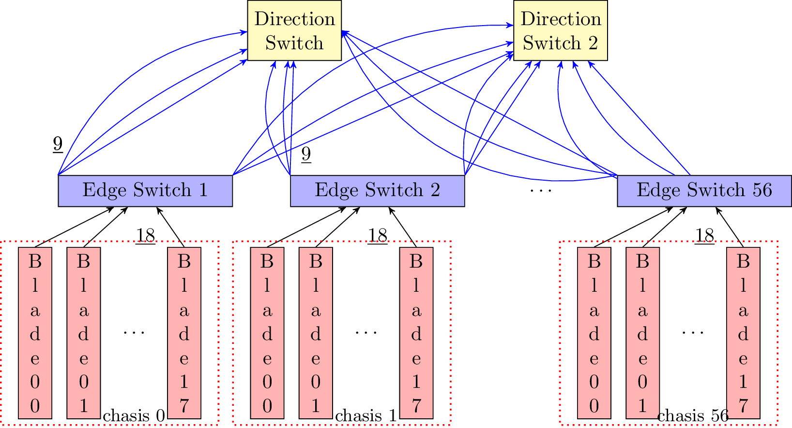

\documentclass[tikz]{standalone}
\usetikzlibrary{arrows,chains,positioning,scopes,quotes,bending,calc}
\tikzset{
edge/.style={draw,text width=8em,minimum height=1em,align=center,fill=blue!30},
blade/.style={draw,text width=1em,minimum height=5em,align=center,fill=red!30},
switch/.style={draw,text width=4em,minimum height=3em,align=center,fill=yellow!30},
arrow/.style={->}
}
\begin{document}
\begin{tikzpicture}[>=stealth']
% Direction Switches
{[start chain]
\node[switch,on chain] (M0) {Direction Switch};
\node[switch,on chain,right=3cm of M0] (M1) {Direction Switch 2};
}
% Edge switches
{[start chain]
\node[edge,on chain,below left=2cm and 0.25cm of M0] (N0) {Edge Switch 1};
\node[edge,on chain,right=1cm of N0] (N1) {Edge Switch 2};
%\node[block,on chain,join=by {arrow},right=1cm of N1] (N2) {N2};
\node[on chain,right=1cm of N1] (N2) {$\cdots$};
\node[edge,on chain,right=1cm of N2] (N3) {Edge Switch 56};
}
% Blade Switches
{[start chain]
\node[blade,on chain, below left=0.7cm and 0.1cm of N0] (B0) {B \\ l \\ a \\ d \\ e \\ 0 \\ 0};
\node[blade,on chain,right=0.25cm of B0] (B1) {B \\ l \\ a \\ d \\ e \\ 0 \\ 1 };
%\node[block,on chain,join=by {arrow},right=1cm of N1] (N2) {N2};
\node[on chain,right=0.25cm of B1] (B2) {$\cdots$};
\node[blade,on chain,right=0.25cm of B2] (B3) {B \\ l \\ a \\ d \\ e \\ 1 \\ 7};
}
% node containing number of blades
\node[below =0.25cm of N0] (L1) {\underline{18}};
% arrows from blade to edge
\draw [->] (B0.north) -- (N0);
\draw [->] (B1.north) -- (N0);
\draw [->] (B3.north) -- (N0);
\draw[red,thick,dotted] ($(B0.north west)+(-0.3,0.1)$) rectangle ($(B3.south east)+(0.3,-0.1)$);
\node [below = 1cm of B2](Lsd0) {\small{chasis 0}};
{[start chain]
\node[blade,on chain, below left=0.7cm and 0.1cm of N1] (C0) {B \\ l \\ a \\ d \\ e \\ 0 \\ 0 };
\node[blade,on chain,right=0.25cm of C0] (C1) {B \\ l \\ a \\ d \\ e \\ 0 \\ 1 };
%\node[block,on chain,join=by {arrow},right=1cm of N1] (N2) {N2};
\node[on chain,right=0.25cm of C1] (C2) {$\cdots$};
\node[blade,on chain,right=0.25cm of C2] (C3) {B \\ l \\ a \\ d \\ e \\ 1 \\ 7};
}
% node containing number of blades
\node[below =0.25cm of N1] (L2) {\underline{18}};
% arrows from blade to edge
\draw [->] (C0.north) -- (N1);
\draw [->] (C1.north) -- (N1);
\draw [->] (C3.north) -- (N1);
% bounding box
\draw[red,thick,dotted] ($(C0.north west)+(-0.3,0.1)$) rectangle ($(C3.south east)+(0.3,-0.1)$);
\node [below = 1cm of C2](Lsd1) {\small{chasis 1}};
{[start chain]
\node[blade,on chain, below left=0.7cm and 0.1cm of N3] (D0) {B \\ l \\ a \\ d \\ e \\ 0 \\ 0};
\node[blade,on chain,right=0.25cm of D0] (D1) {B \\ l \\ a \\ d \\ e \\ 0 \\ 1 };
%\node[block,on chain,join=by {arrow},right=1cm of N1] (N2) {N2};
\node[on chain,right=0.25cm of D1] (D2) {$\cdots$};
\node[blade,on chain,right=0.25cm of D2] (D3) {B \\ l \\ a \\ d \\ e \\ 1 \\ 7};
}
% node containing number of blades
\node[below =0.25cm of N3] (L3) {\underline{18}};
% arrows from blade to edge
\draw [->] (D0.north) -- (N3);
\draw [->] (D1.north) -- (N3);
\draw [->] (D3.north) -- (N3);
% bounding box
\draw[red,thick,dotted] ($(D0.north west)+(-0.3,0.1)$) rectangle ($(D3.south east)+(0.3,-0.1)$);
\node [below = 1cm of D2](Lsd3) {\small{chasis 56}};
% Edge switchs to direction switches arrows
\path (N1.north west) edge[blue,->,bend left=10] node [left] {} (M0);
\path (N1.north west) edge[blue,->,bend left=30] node [left] {} (M0);
\path (N1.north west) edge[blue,->] node [left] {} (M0);
\path (N1.north east) edge[blue,->,bend left=10] node [left] {} (M1);
\path (N1.north east) edge[blue,->,bend left=30] node [left] {} (M1);
\path (N1.north east) edge[blue,->] node [left] {} (M1);
% N1, switch 2
\path (N0.north west) edge[blue,->,bend left=10] node [left] {} (M0);
\path (N0.north west) edge[blue,->,bend left=30] node [left] {} (M0);
\path (N0.north west) edge[blue,->] node [left] {} (M0);
\path (N0.north east) edge[blue,->,bend left=10] node [left] {} (M1);
\path (N0.north east) edge[blue,->,bend left=30] node [left] {} (M1);
\path (N0.north east) edge[blue,->] node [left] {} (M1);
% N3, edge switch 56
\path (N3.north west) edge[blue,->,bend left=20] node [left] {} (M0.east);
\path (N3.north west) edge[blue,->,bend left=40] node [left] {} (M0.east);
\path (N3.north west) edge[blue,->] node [left] {} (M0.east);
\path (N3) edge[blue,->,bend left=20] node [left] {} (M1);
\path (N3) edge[blue,->,bend left=40] node [left] {} (M1);
\path (N3) edge[blue,->] node [left] {} (M1);
\node[above right =0.10cm of N1.north west] (NL1) {\underline{9}};
\node[above =0.25cm of N0.north west] (NL0) {\underline{9}};
\node[above =0.25cm of N0.north west] (NL0) {\underline{9}};
\end{tikzpicture}
\end{document}Created by David Li